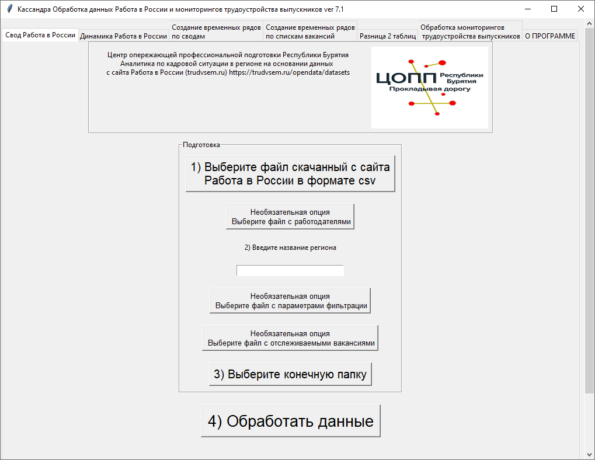

Назначение программы
Программа Кассандра предназначена для получения в удобном виде списка вакансий региона, создания аналитики (включая создание временных рядов для отслеживания динамики изменения основных показателей) по данным с портала Работа в России (trudvsem.ru) и автоматизации некоторых задач, связанных со сбором и обработкой отчетов по мониторингу трудоустройства выпускников.
Ссылка на свидетельство РоспатентаЧто может программа
- Обработка данных с сайта Работа в России. Создание списка вакансий региона в формате xlsx, создание аналитики по вакансиям. Создание списка вакансий конкретных работодателей, создание аналитики по вакансиям конкретных работодателей.
- Сравнение изменений рынка вакансий по двум выгрузкам на основе аналитики, полученной с помощью Кассандры.
- Создания временных рядов для отображения динамики изменения количества вакансий по основным показателям.
- Нахождение разницы между двумя таблицами с подсчетом разницы и изменения в процентах (для числовых показателей).
- Обработка некоторых форм мониторинга трудоустройства выпускников (пятистрочная, нозологии 15 строк и т.п.)
Входные данные
Программа использует в своей работе выгрузки по вакансиям федеральных округов в формате csv с портала Работа в России находящиеся по адресу:https://trudvsem.ru/opendata/datasets
Программа не использует в своей работе какие-либо базы данных
Выходные данные
В папке которую выбирает пользователь создаются файлы формата xlsx
Интерфейс пользователя
При работе с программой используется графический интерфейс

Совместимость
Операционная система: Windows 10 x64, Linux x64 (Импортозамещенные ОС: Red OS, Alt Linux, Astra Linux)
Безопасность
Программа работает локально, не использует локальную сеть или сеть Интернет.
Исходные файлы csv и xlsx пользователя не изменяются программой.
Удобство использования
В интерфейсе программы используются вкладки, на каждой из вкладок находится все что нужно для работы конкретной функции программы.
В программе не используются меню различной степени вложенности, все шаги которые нужно выполнить пользователю пронумерованы по порядку.
Интерфейс ориентирован на пользователей с невысоким уровнем компьютерной грамотности.
Поддержка
Предложения, замечания по работе программы отправлять на почту itdarhan@yandex.ru
Скачать
Чтобы начать работу, скачайте инструкцию
Скачать инструкцию по установке и началу работыВ руководстве пользователя вы найдете подробное пошаговое руководство по работе с каждой из функций программы.
Скачать руководство пользователяСкачайте и распакуйте архив с материалами для внедрения.
Скачать материалы для внедренияОбучающие видео по работе с программой.
Обучающие видеоВыберите нужную версию Кассандры для скачивания.
Скачать версию Кассандры для Windows x64Скачать версию Кассандры для Linux x64